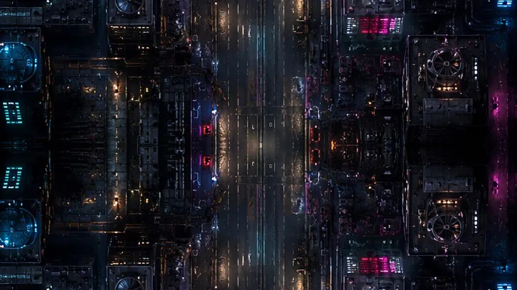

Corrida em perspectiva no estilo dos clássicos de 16 bits. 28 fases por Brasil, Estados Unidos, Japão e Itália, com garagem, turbo e multiplayer local por Bluetooth.
28 fases por quatro países, garagem para melhorar o carro e corrida contra amigos por Bluetooth.
Grátis
Tiro vertical com ondas de inimigos, chefes e evolução de nave. Partidas curtas, na tradição dos fliperamas.
Jogue sem instalar
Tiro em primeira pessoa numa cidade de doces, com salas online e dez armas. Roda direto no navegador.
Jogue sem instalar
Aprenda a resgatar jogos gratuitos da Epic Games Store e veja a diferença entre oferta temporária, demonstração e free-to-play.
23 de agosto de 2026
Entenda a fase de entrada, o sistema suíço e as condições para avançar no Worlds 2026 de League of Legends.
23 de agosto de 2026
Entenda a diferença entre VRR e ALLM, os requisitos de HDMI e por que nem toda TV com 4K oferece os mesmos recursos.
23 de agosto de 2026VM Games é o estúdio independente de Arley Vieira, em Catalão, Goiás. Os jogos são feitos do zero — o Turbo Race e o Sugar Strike nem usam engine: a pista em perspectiva e o mundo 3D de doces são desenhados por renderizadores escritos à mão.
Dúvida, problema técnico ou pedido sobre dados pessoais: arleyadm@gmail.com.